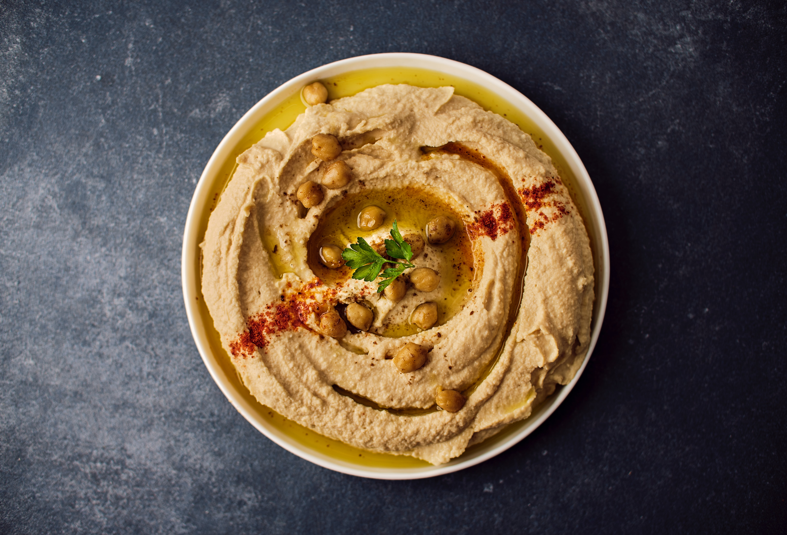

Return to main page
Hummus

Description:
Hummus is a Middle eastern traditional dish. It is considered a dip dish made of tahini and mashed chickpeas.
Ingredients:
- 2 cloves of garlic, peeled and crushed
- 2 tablesppons olive oil
- 15 ounce can of chickpeas beans, drained, liquid reserved
- 1 tablespoon sesame seeds
- Salt and pepper to taste
Steps:
- Over medium heat, cook and stir the garlic with olive oil for 5 minutes.
- Blend chickpeas until smooth.
- Mix the chickpeas with garlic, sesame seeds, salt and pepper and citron juice.
- Mix everything together until the desired thickness is observed.